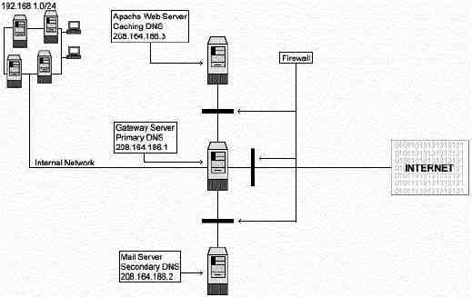

Глава 7 Сетевой брандмауэр (Часть 1)В этой
главе
Linux
IPCHAINS
Создание ядра с
поддержкой IPCHAINS
Разъяснения
некоторых правил используемых в скриптах настройки брандмауэра
Скрипт для
настройки брандмауэра
Конфигурация
скрипта "/etc/rc.d/init.d/firewall" для Веб сервера
Конфигурация
скрипта "/etc/rc.d/init.d/firewall" для Почтового
сервера
|
|
Краткое описание
Кто-нибудь может мне сказать, почему я должен использовать
коммерческий брандмауэр, а не простой в использовании Ipchains? Что я теряю
используя Ipchains? Ipchains хорош и становится все лучше и лучше, чем
коммерческие продукты с точки зрения поддержки и функциональных возможностей.
Вы, скорее всего, будете лучше понимать процессы происходящие в вашей сети, если
будете использовать Ipchains, а не его коммерческий аналоги.
Что такое
политика безопасности сетевого брандмауэра.
Политика безопасности сетевого брандмауэра определяет те
сервисы, которые будут явно разрешены или запрещены, как они будут
использоваться и какие исключения будут из этих правил. Полная политика защиты
организации должна быть определена согласно анализу безопасности и деловой
необходимости. Брандмауэр имеет небольшое значение, если полная политика защиты
не определена должным образом. Каждое правило определенное в политика
безопасности сетевого брандмауэра должно быть реализовано на брандмауэре. В
общем все брандмауэры используют следующие методы:
Все, что специально не разрешено - запрещено.
Этот
метод блокирует весь трафик между двумя сетями, за исключением тех сервисов и
приложений которым выдано разрешение. Поэтому каждую необходимую службу и
приложение нужно разрешать. Никогда нельзя разрешать работу тем службам и
приложениям, которые могут быть использованы для атаки на вашу систему. Это
наиболее безопасный метод - отвергать все, что явно не разрешено. С другой
стороны, со стороны пользователя, этот метод более ограничительный и менее
удобный. Именно его мы будем использовать для построения брандмауэра в этой
книге.
Все, что не запрещено, то разрешено.
Этот метод
позволяет весь трафик между сетями, за исключением определенных сервисов и
приложений. Поэтому каждую ненужную службу надо явно запрещать. Это очень
удобный и гибкий метод для пользователей, но несущий в себе серьезные
потенциальные проблемы в безопасности.
Что такое пакетный фильтр?
Пакетный фильтр - это тип брандмауэра созданного на основе ядра
Linux. Он работает на сетевом уровне. Данным позволяется остаться в системе,
если это разрешено правилами. Проходящие пакеты фильтруются по типу, адресу
источника, адресу получателя и по порту. В большинстве случаев фильтрация
пакетов осуществляется на маршрутизаторе, который перенаправляет пакеты согласны
правилам фильтрации. Когда пакет приходит на фильтрующий маршрутизатор, тот
извлекает информацию из заголовка пакета и принимает решение согласно правилам
фильтрации об пересылке или уничтожении пакета. Из заголовка пакета может
извлекаться следующая информация:
- IP адрес источника
- IP адрес получателя
- TCP/UDP порт источника
- TCP/UDP порт получателя
- Тип ICMP сообщения
- Информация об инкапсулированном протоколе (TCP, UDP, ICMP или IP tunnel).
Так как для анализа и регистрации используется небольшое
количество данных, фильтрующий брандмауэр создает меньшую нагрузку на CPU и
меньшие задержки в сети. Существует много путей структурирования вашей сети для
защиты ее брандмауэром.
Топология.
Все сервера должны быть настроены так, чтобы блокировать все
неиспользуемые порты. Это необходимо для большей безопасности. Представьте себе,
что кто-то сумел проникнуть на ваш брандмауэр: если соседние сервера не
настроены на блокирование неиспользуемых портов, то это может привести к
серьезным проблемам в безопасности. То же истинно и для локальных соединений:
неправомочные служащие могут получить доступ на ваши сервера из внутренней
части.
В нашей конфигурации мы дадим вам три различных примера,
которые помогут вам настроить ваши правила брандмауэра в зависимости от типа
сервера и его размещения в вашей сети. Первый пример будет для Веб сервера,
второй для почтового сервера и третий для Шлюза, который действует как сервер-
посредник (proxy server) для внутренних Wins машин, рабочих станций и
серверов.

|
www.openna.com
Кэширующий
DNS
208.164.186.3 |
deep.openna.com
Мастер DNS
сервер
208.164.186.1 |
mail.openna.com
Slave DNS
сервер
208.164.186.2 |
- Разрешен неограниченный трафик на интерфейсе loopback
- Разрешен ICMP трафик
- Разрешен DNS сервер и клиент на порту 53
- Разрешен SSH сервер на порту 22
- Разрешен HTTP сервер на 80 порту
- Разрешен HTTPS сервер на порту 443
- Разрешен SMTP клиент на порт 25
- Разрешен FTP сервер на 20, 21 портах
- Разрешены исходящие traceroute запросы
|
- Разрешен неограниченный трафик на интерфейсе loopback
- Разрешен ICMP трафик
- Разрешен DNS сервер и клиент на порт 53
- Разрешен SSH сервер и клиент на порт 22
- Разрешен HTTP сервер и клиент на порт 80
- Разрешен HTTPS сервер и клиент на порт 443
- Разрешен WWW-CACHE клиент на порт 8080
- Разрешен внешний POP клиент на порт 110
- Разрешен внешний NNTP NEWS клиент на порт 119
- Разрешен SMTP сервер и клиент на порт 25
- Разрешен IMAP сервер на порт 143
- Разрешен IRC клиент на порт 6667
- Разрешен ICQ клиент на порт 4000
- Разрешен FTP клиент на порты 20, 21
- Разрешен RealAudio/QuickTime клиент
- Разрешены исходящие traceroute запросы
|
- Разрешен неограниченный трафик на интерфейсе loopback
- Разрешен ICMP трафик
- Разрешен DNS сервер и клиент на порт 53
- Разрешен SSH сервер на порт 22
- Разрешен SMTP сервер и клиент на порт 25
- Разрешен IMAP сервер на порт 143
- Разрешены исходящие traceroute запросы
|
Эта таблица показывает, какие порты я должен открыть на
различных серверах. В зависимости от того, какой сервис должен быть доступен на
сервере, вы должны настроить скрипт брандмауэра на разрешение трафика к
определенному порту. www.openna.com - наш Веб сервер, mail.openna.com - это наш
почтовый сервер для всех внутренних сетей и deep.openna.com - это шлюз в всех
примеров объясненных в этой главе.
Первое о
чем вы должны подумать, это чтобы ваше ядро было создано с поддержкой сетевого
Firewall и Firewalling. Помните, что все сервера должны быть настроены на
блокирование неиспользуемых портов, даже если они не выступают в роли
брандмауэра. В ядре 2.2.14 вам нужно ответить Yes на следующие вопросы:
Networking options:
Network firewalls (CONFIG_FIREFALL)
[N] Y
IP:Firewalling (CONFIG_IP_FIREWALL) [N] Y
IP:TCP syncookie support
(CONFIG_SYN_COOKIES) [N] Y
ЗАМЕЧАНИЕ. Если при создание ядра вы использовали
материалы из главы 3 книги, то все необходимые опции ("Network firewalls,
IP:Firewalling, and IP:TCP syncookie support") были отмечены.
Ниже приводятся пояснения к некоторым правилам, которые мы
используем в примере firewall. Они приводятся только как рекомендации, потому
что скрипты хорошо комментированы и легко модифицируются.
Константы, используемые в примере скрипта firewall-а.
EXTERNAL_INTERFACE
Это имя внешнего сетевого
интерфейса, обращенного в Интернет. В нашем примере это
eth0.
LOCAL_INTERFACE_1
Это имя интерфейса подключенного к
внутренней сети LAN. В нашем примере это
eth1.
LOOPBACK_INTERFACE
Это имя loopback интерфейса. В нашем
примере это lo.
IPADDR
Это IP адрес вашего внешнего интерфейса. Это
или статический адрес зарегистрированный в InterNIC, или динамический адрес
присвоенный вашим ISP (обычно, через DHCP).
LOCALNET_1
Это адрес
вашей локальной сети (LAN), если любой - полный диапазон IP адресов,
используемых машинами в вашей сети. Они могут быть статически присвоенными, или
могут назначаться локальным DHCP сервером. В нашем примере, диапазон адресов
представляет собой часть сети класса C -
192.168.1.0/24.
ANYWHERE
Это обозначение адреса, который ipchains
воспринимает как любая машина (не широковещательный адрес). Обе программы
предоставляют метку any/0 для подобного адреса, который равен
0.0.0.0/0.
NAMESERVER_1
Это IP адрес Primary DNS сервера из вашей
сети или вашего ISP.
NAMESERVER_2
Это IP адрес Secondary DNS
сервера из вашей сети или вашего ISP.
MY_ISP
Это диапазон адресов
вашего ISP & NOC. Это значение используется firewall-ом для разрешения
запросов ICMP ping и traceroute. Если вы не определите это диапазон, то будет
запрещено посылать ping в Интернет из вашей локальной
сети.
LOOPBACK
Диапазон адресов loopback равен 127.0.0.0/8.
Интерфейс непосредственно адресован как 127.0.0.1 (в файле
/etc/hosts).
PRIVPORTS
Привилегированные порты, обычно, с 0 по
1023.
UNPRIVPORTS
Непривилегированные порты, обычно, с 1024 по
65535. Они определяются на динамически на стороне клиента
соединения.
Default Policy
Брандмауэр имеет предопределенную линию
поведения и собирает действия, которые нужно предпринять в ответ на определенные
типы сообщений. Это означает, что если пакет не попал ни под одно из правил, то
к нему применяется правило по умолчанию.
ЗАМЕЧАНИЕ. Люди, которые динамически получают адреса от
ISP могут включить следующие две строки в описания firewall-а. Эти строки
определяют IP адрес интерфейса ppp0 и адрес сети удаленного ppp
сервера.
IPADDR=`/sbin/ifconfig | grep -A 4 ppp0
| awk '/inet/ { print $2 } ' | sed -e s/addr://`
MY_ISP=`/sbin/ifconfig |
grep -A 4 ppp0 | awk '/P-t-P/ { print $3 } ' | sed -e s/P-t-P:// | cut -d '.' -f
1-3`.0/24
Разрешение локального трафика.
Так как политика по умолчанию в нашем примере запрещать все,
что не разрешено, то некоторые установки должны быть возвращены в исходное
состояние. Локальные сетевые сервисы не проходят через внешний интерфейс, они
идут через специальный приватный интерфейс, называемый loopback. Ни одна из
ваших локальных сетевых программ не будет работать, пока не будет разрешен
полный трафик через loopback интерфейс.
#
Неограниченный трафик через loopback интерфейс.
ipchains -A input -i
$LOOPBACK_INTERFACE -j ACCEPT
ipchains -A output -i $LOOPBACK_INTERFACE -j
ACCEPT
Фильтрация адреса источника.
Все IP пакеты содержат в своих заголовках IP адреса источника и
получателя и тип IP протокола помещенного в пакет (TCP, UDP, ICMP). Единственным
средством идентификации согласно протоколу IP является адрес источника
сообщений. Это приводит к возможности подмены адреса (spoofing), когда
злоумышленник заменят адрес источника на несуществующий адрес или на адрес
другого сервера.
# Отбрасывание spoof-пакетов, с
адресом источника совпадающим с вашим внешним адресом.
ipchains -A input -i
$EXTERNAL_INTERFACE -s $IPADDR -l -j DENY
Существует по крайней мере семь адресов на внешнем интерфейсе
от которых необходимо отказаться. К ним относятся:
- вашего внешнего IP адреса
- от приватных IP адресов класса A
- от приватных IP адресов класса B
- от приватных IP адресов класса C
- от широковещательного адреса класса D
- от зарезервированных адресов класса E
- от loopback интерфейса
Блокировка исходящих пакетов, содержащих подобные исходные
адреса, за исключением вашего IP адреса, защищает от ошибок конфигурации с вашей
стороны.
Замечание. Не забудьте исключить ваш собственный IP
адрес из списка исходящих блокируемых пакетов. По умолчанию, я исключаю
приватные адреса класса C, так как они наиболее часто используются большинством
людей сегодня. Если вы использовали другой класс вместо C, то вы должны
раскомментировать соответствующие строки в секции "SPOOFING & BAD ADDRESSES"
файла конфигурации файрвола.
Остальная часть правил.
Другие правила используемые в скрипте брандмауэра
описывают:
- доступ к сервисам из внешнего мира
- доступ к сервисам во внешнем миру
- Маскарадинг внутренних машин
Утилита ipchains позволяет вам установить брандмауэр, IP
маскарадинг и т.д. Ipchains общается с ядром и говорит какие пакеты необходимо
отфильтровать. Теоретически, все установки вашего брандмауэра запоминаются в
ядре и теряются при перезагрузке сервера. Для борьбы с этим, чтобы сделать
правила постоянными, мы рекомендуем использовать инициализационные скрипты
System V. Для этого создайте файл, содержащий скрипт файрвола подобный
описанному ниже, в каталоге "/etc/rc.d/init.d/" на каждом сервере. Конечно,
каждый сервер имеет различные сервисы и будет иметь разные скрипты. По этим
причинам, мы предоставляем три различных набора правил, с которыми вы можете
поиграть и подогнать под ваши нужды. Также, я подразумеваю, что вы имеете хотя
бы минимальные знания о том, как фильтрует firewall, и как работают его
правила.